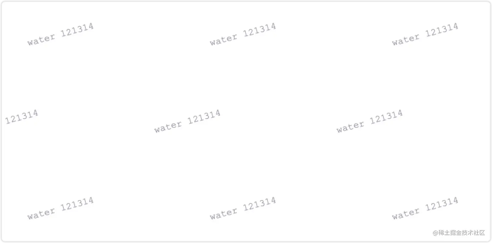
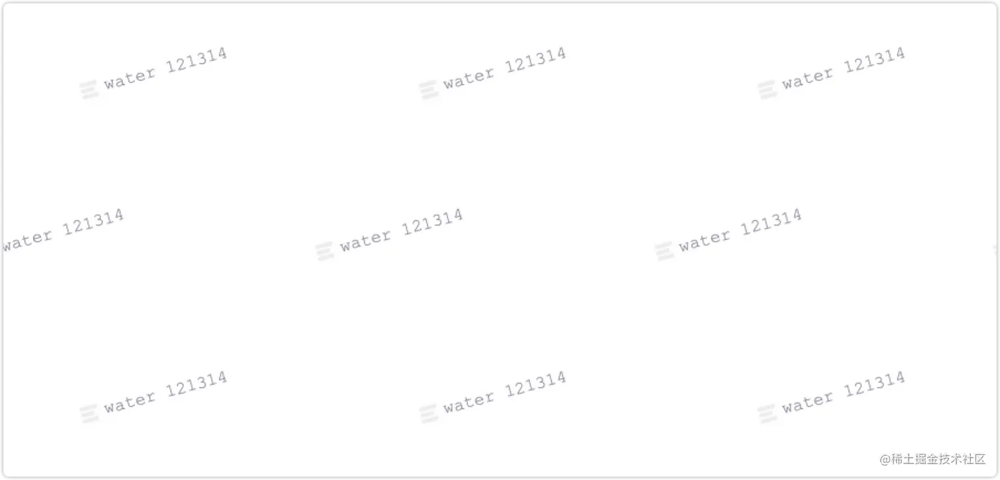
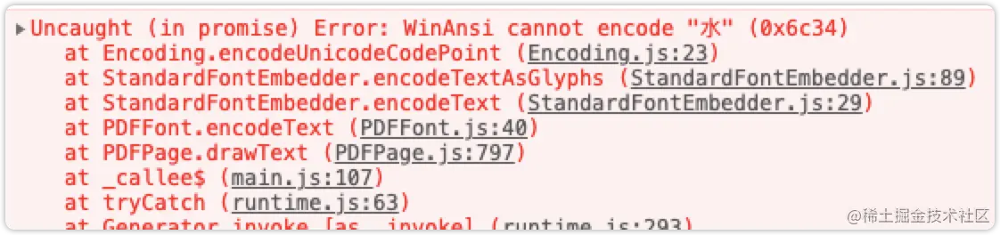
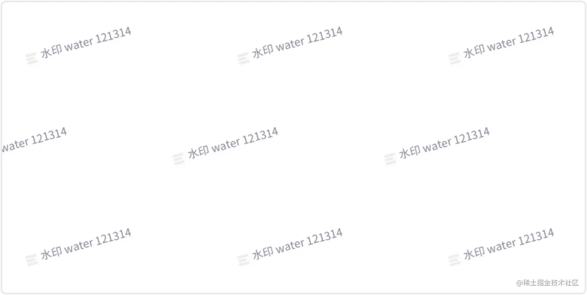

javascript前端为pdf添加水印教程
发布时间：
本文字数：1,565 字 阅读完需：约 4 分钟
场景：前端下载 pdf 文件的时候，需要加上水印，再反给用户下载
用到的库：pdf-lib(文档)@pdf-lib/fontkit
字体：github
方案目标：logo图 + 中文 + 英文 + 数字 => 透明水印
首先安装
pdf-lib: 它是前端创建和修改 PDF 文档的一个工具（默认_不支持中文_，需要加载自定义字体文件）
npm install --save pdf-lib
安装
@pdf-lib/fontkit：为 pdf-lib 加载自定义字体的工具
npm install --save @pdf-lib/fontkit
没有使用
pdf.js的原因是因为：
- 会将 PDF 转成图片，无法选中
- 操作后 PDF 会变模糊
- 文档体积会变得异常大
实现：
首先我们的目标是在 PDF 文档中，加上一个带 logo 的，同时包含中文、英文、数字字符的透明水印，所以我们先来尝试着从本地加载一个文件，一步步搭建。
1. 获取 PDF 文件
本地：
// <input type="file" name="pdf" id="pdf-input">
let input = document.querySelector('#pdf-input');
input.onchange = onFileUpload;
// 上传文件
function onFileUpload(e) {
let event = window.event || e;
let file = event.target.files[0];
}
除了本地上传文件之外，我们也可以通过网络请求一个 PDF 回来，注意响应格式为 **blob **。 网络：
var x = new XMLHttpRequest();
x.open("GET", url, true);
x.responseType = 'blob';
x.onload = function (e) {
let file = x.response;
}
x.send();
// 获取直接转成 pdf-lib 需要的 arrayBuffer
// const fileBytes = await fetch(url).then(res => res.arrayBuffer())
2. 文字水印
在获取到 PDF 文件数据之后，我们通过 pdf-lib 提供的接口来对文档做修改。
// 修改文档
async function modifyPdf(file) {
const pdfDoc = await PDFDocument.load(await file.arrayBuffer());
// 加载内置字体
const helveticaFont = await pdfDoc.embedFont(StandardFonts.Courier);
// 获取文档所有页
const pages = pdfDoc.getPages();
// 文字渲染配置
const drawTextParams = {
lineHeight: 50,
font: helveticaFont,
size: 12,
color: rgb(08, 08, 2),
rotate: degrees(15),
opacity: 5,
};
for (let i = 0; i < pages.length; i++) {
const page = pages[i];
// 获取当前页宽高
const { width, height } = page.getSize();
// 要渲染的文字内容
let text = "water 121314";
for (let ix = 1; ix < width; ix += 230) { // 水印横向间隔
let lineNum = 0;
for (let iy = 50; iy <= height; iy += 110) { // 水印纵向间隔
lineNum++;
page.drawText(text, {
x: lineNum & 1 ? ix : ix + 70,
y: iy,
...drawTextParams,
});
}
}
}
来看一下现在的效果 
3. 加载本地 logo
在加载图片这块，我们最终想要的其实是图片的 Blob 数据，获取网图的话，这里就不做介绍了，下边主要着重介绍一下，如何通过 js 从本地加载一张图。 先贴上代码：
// 加载 logo blob 数据
~(function loadImg() {
let img = new Image();
img.src = "./water-logo.png";
let canvas = document.createElement("canvas");
let ctx = canvas.getContext("2d");
img.crossOrigin = "";
img.onload = function () {
canvas.width = this.width;
canvas.height = this.height;
ctx.fillStyle = "rgba(255, 255, 255, 1)";
ctx.fillRect(0, 0, canvas.width, canvas.height);
ctx.drawImage(this, 0, 0, this.width, this.height);
canvas.toBlob(
function (blob) {
imgBytes = blob; // 保存数据到 imgBytes 中
},
"image/jpeg",
1
); // 参数为输出质量
};
})();
首先通过一个自执行函数，在初期就自动加载 logo 数据，当然我们也可以根据实际情况做相应的优化。 整体的思路就是，首先通过 image 元素来加载本地资源，再将 img 渲染到 canvas 中，再通过 canvas 的 toBlob 来得到我们想要的数据。
在这块我们需要注意两行代码：
ctx.fillStyle = "rgba(255, 255, 255, 1)";
ctx.fillRect(0, 0, canvas.width, canvas.height);
如果我们不加这两行代码的话，同时本地图片还是透明图，最后我们得到的数据将会是一个黑色的方块。所以我们需要在 drawImage 之前，用白色填充一下 canvas 。
4. 渲染 logo
在渲染 logo 图片到 PDF 文档上之前，我们还需要和加载字体类似的，把图片数据也挂载到 pdf-lib 创建的文档对象上（pdfDoc），其中 imgBytes 是我们已经加载好的图片数据。
let _img = await pdfDoc.embedJpg(await imgBytes.arrayBuffer());
挂载完之后，做一些个性化的配置
page.drawImage(_img, {
x: lineNum & 1 ? ix - 18 : ix + 70 - 18, // 奇偶行的坐标
y: iy - 8,
width: 15,
height: 15,
opacity: 5,
});
5. 查看文档
这一步的思路就是先通过 pdf-lib 提供的 save 方法，得到最后的文档数据，将数据转成 Blob，最后通过 a 标签打开查看。
// 保存文档 Serialize the PDFDocument to bytes (a Uint8Array)
const pdfBytes = await pdfDoc.save();
let blobData = new Blob([pdfBytes], { type: "application/pdf;Base64" });
// 新标签页预览
let a = document.createElement("a");
a.target = "_blank";
a.href = window.URL.createObjectURL(blobData);
document.body.appendChild(a);
a.click();
document.body.removeChild(a);
到目前的效果 
6. 中文字体
由于默认的 pdf-lib 是不支持渲染中文的
Uncaught (in promise) Error: WinAnsi cannot encode "水" (0x6c34)

所以我们需要加载自定义字体，但是常规的字体文件都会很大，为了使用，需要将字体文件压缩一下，压缩好的字体在文档头部，包含空格和基础的3500字符。 压缩字体用到的是
gulp-fontmin命令行工具，不是客户端。具体压缩方法，可自行搜索。
在拿到字体之后（ttf文件），将字体文件上传到网上，再拿到其 arrayBuffer 数据。之后再结合 pdf-lib 的文档对象，对字体进行注册和挂载。同时记得将文字渲染的字体配置改过来。
// 加载自定义字体
const url = 'https://xxx.xxx/xxxx';
const fontBytes = await fetch(url).then((res) => res.arrayBuffer());
// 自定义字体挂载
pdfDoc.registerFontkit(fontkit)
const customFont = await pdfDoc.embedFont(fontBytes)
// 文字渲染配置
const drawTextParams = {
lineHeight: 50,
font: customFont, // 改字体配置
size: 12,
color: rgb(08, 08, 2),
rotate: degrees(15),
opacity: 5,
};
所以到现在的效果 
7. 完整代码
import { PDFDocument, StandardFonts, rgb, degrees } from "pdf-lib";
import fontkit from "@pdf-lib/fontkit";
let input = document.querySelector("#pdf-input");
let imgBytes;
input.onchange = onFileUpload;
// 上传文件
function onFileUpload(e) {
let event = window.event || e;
let file = event.target.files[0];
console.log(file);
if (file.size) {
modifyPdf(file);
}
}
// 修改文档
async function modifyPdf(file) {
const pdfDoc = await PDFDocument.load(await file.arrayBuffer());
// 加载内置字体
const helveticaFont = await pdfDoc.embedFont(StandardFonts.Courier);
// 加载自定义字体
const url = 'pttps://xxx.xxx/xxx';
const fontBytes = await fetch(url).then((res) => res.arrayBuffer());
// 自定义字体挂载
pdfDoc.registerFontkit(fontkit)
const customFont = await pdfDoc.embedFont(fontBytes)
// 获取文档所有页
const pages = pdfDoc.getPages();
// 文字渲染配置
const drawTextParams = {
lineHeight: 50,
font: customFont,
size: 12,
color: rgb(08, 08, 2),
rotate: degrees(15),
opacity: 5,
};
let _img = await pdfDoc.embedJpg(await imgBytes.arrayBuffer());
for (let i = 0; i < pages.length; i++) {
const page = pages[i];
// 获取当前页宽高
const { width, height } = page.getSize();
// 要渲染的文字内容
let text = "水印 water 121314";
for (let ix = 1; ix < width; ix += 230) { // 水印横向间隔
let lineNum = 0;
for (let iy = 50; iy <= height; iy += 110) { // 水印纵向间隔
lineNum++;
page.drawImage(_img, {
x: lineNum & 1 ? ix - 18 : ix + 70 - 18,
y: iy - 8,
width: 15,
height: 15,
opacity: 7,
});
page.drawText(text, {
x: lineNum & 1 ? ix : ix + 70,
y: iy,
...drawTextParams,
});
}
}
}
// 保存文档 Serialize the PDFDocument to bytes (a Uint8Array)
const pdfBytes = await pdfDoc.save();
let blobData = new Blob([pdfBytes], { type: "application/pdf;Base64" });
// 新标签页预览
let a = document.createElement("a");
a.target = "_blank";
a.href = window.URL.createObjectURL(blobData);
document.body.appendChild(a);
a.click();
document.body.removeChild(a);
}
// 加载 logo blob 数据
~(function loadImg() {
let img = new Image();
img.src = "./water-logo.png";
let canvas = document.createElement("canvas");
let ctx = canvas.getContext("2d");
img.crossOrigin = "";
img.onload = function () {
canvas.width = this.width;
canvas.height = this.height;
ctx.fillStyle = "rgba(255, 255, 255, 1)";
ctx.fillRect(0, 0, canvas.width, canvas.height);
ctx.drawImage(this, 0, 0, this.width, this.height);
canvas.toBlob(
function (blob) {
imgBytes = blob;
},
"image/jpeg",
1
); // 参数为输出质量
};
})();
8. 不完美的地方
当前方案虽然可以实现在前端为 PDF 加水印，但是由于时间关系，有些瑕疵还需要再进一步探索解决 💪：
- 水印是浮在原文本之上的，可以被选中
- logo 的背景虽然不注意看不到，但是实际上还未完全透明 🤔